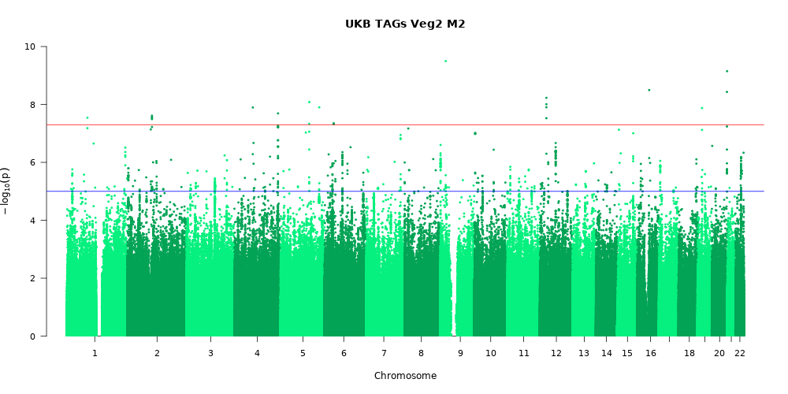

Genome-wide association and interaction studies (GWAS and GWIS)

Genome-wide association study of PUFA and MUFA traits
A GWAS of 124,024 Europeans found 51 novel genetic loci associated with heritability of circulating polyunsaturated and monounsaturated fatty acid levels.

Genome-wide interaction study of fish oil on lipid traits
We found evidence of significant interaction between fish oil supplementation and genotype, suggesting fish oil may raise or lower triglycerides based on genetics.
×
The results of this genome-wide interaction study (GWIS) revealed one significant interaction locus at rs112803755 which modified the effects of fish oil supplementation on triglyceride levels in a cross-sectional cohort study of 81,246 Europeans. The minor allele at this SNP is significantly associated with decreased TAGs in individuals with fish oil supplementation, but with increased TAGs in those without supplementation. Our findings highlight the usefulness of personalized nutrition based on individual genetic makeup.
Genome-wide association study of fish oil supplementation on lipid traits in 81,246 individuals reveals new gene-diet interaction loci, by Francis et al.(2021)
The results of this genome-wide interaction study (GWIS) revealed one significant interaction locus at rs112803755 which modified the effects of fish oil supplementation on triglyceride levels in a cross-sectional cohort study of 81,246 Europeans. The minor allele at this SNP is significantly associated with decreased TAGs in individuals with fish oil supplementation, but with increased TAGs in those without supplementation. Our findings highlight the usefulness of personalized nutrition based on individual genetic makeup.

Vegetarianism interaction projects (two in progress)
We are currently performing two genome-wide interaction studies to identify SNPs involved in gene-diet interactions of vegetarianism on both lipid traits, and sex hormone traits.